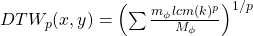
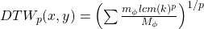
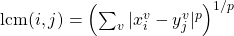
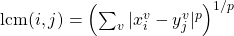
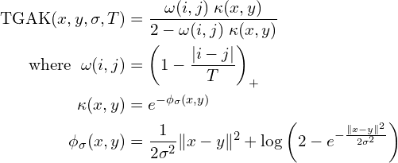

8 Time Series
8.1 Misc
8.2 Cross-Correlation Function (CCF)
- The correlation between two stationary series. The cross-correlation function (CCF) helps you determine which lags of time series X predicts the value of time series Y.
- The set of sample correlations between xt+h and yt for h = 0, ±1, ±2, ±3, and so on. A negative value for h is a correlation between the x-variable at a time before t and the y-variable at time t. For instance, consider h = −2. The CCF value would give the correlation between xt−2 and yt.
- When calculating correlations between lags of a variable and the variable itself (ACF) or another variable (CCF) you can’t, for example in a CCF, simply take corr(xt-k, yt) for the correlation of x at lag k and y and repeat for all the lags of x. Since the corr formula/function requires the mean of the series, you would be using a different mean for xk for each calculation of the correlation of each pair. The assumption is that the series are (second-order?) stationary and therefore have a constant mean (i.e. each series has 1 mean (and variance)), so the mean(s) of (each) original series should be used in the calculations of the correlations.
- Source: Modern Applied Statistics with S, Venables and Ripley
- Compared one against the other in COVID-19 CFR project and they actually produce similar patterns but different values of the CCF. The corr method produce inflated CCF values.
- We expect about 1.75 false alarms out of the 35 sample cross-correlations even after prewhitening
- Terms
- In a cross-correlation in which the direction of influence between two time-series is hypothesized or known,
- The influential time-series is called the “input” time-series
- The affected time-series is called the “output” time-series.
- When one or more xt+h , with h negative, are predictors of yt, it is sometimes said that x leads y.
- When one or more xt+h, with h positive, are predictors of yt, it is sometimes said that x lags y.
- In a cross-correlation in which the direction of influence between two time-series is hypothesized or known,
- Avoid spurious correlations
- Make sure there’s a theoretical reason for the two series to be related
- **Autocorrelation of at least one series should be removed (transformed to white noise)
- With autocorrelation present:
- The variance of cross-correlation coefficient is high and therefore spurious correlations are likely
- Significance calculations are no longer valid since the CCF distribution will not be normal and the variance is no longer 1/n
- With autocorrelation present:
- A problem even with stationary series (even more so with non-stationary series)
- Steps
- Test for stationarity
- Find number of differences to make the series stationary
- Not sure if each series should be differenced the same number of times
- Why would you test a seasonal series and non-seasonal series for an association.
- The requirement is stationarity, so maybe try using the highest difference needed between both series
- In dynamic regression, Hyndman says difference all variables if one needs differencing, so proabably applicable here.
- Some examples also used log transformation , but when I did, it produced nonsensical CCF values. (covid cfr project). So, beware.
- Not sure if each series should be differenced the same number of times
- Seasonal Difference –> Difference
- (Optional) Lag scatter plots if the differenced series and look for patterns to get an idea of the strength of the linear correlation
- If there’s a nonlinear pattern, might be difficult or might not to use a nonlinear or nonparametric correlation function. See 3rd bullet under CCF header above for discussion of stationarity assumption. May not be necessary with another correlation type.
- Prewhiten both series (cryer, chan method)
- Apply correlation function
- Prewhitening
If either series contain autocorrelation, or the two series share common trends, it is difficult for the CCF to identify meaningful relationships between the two time series. Pre-whitening solves this problem by removing the autocorrelation and trends.
Example from COVID-19 CFR project
# numbers of differences ind_cases_diff <- forecast::ndiffs(ind_cases_ts) ind_deaths_diff <- forecast::ndiffs(ind_deaths_ts) # seasonal ind_cases_sdiff <- forecast::nsdiffs(ind_cases_ts) ind_deaths_sdiff <- forecast::nsdiffs(ind_deaths_ts) # no seasonal diffs needed ind_cases_proc <- diff(ind_cases_ts, ind_cases_diff) ind_deaths_proc <- diff(ind_deaths_ts, ind_deaths_diff) # fit AR model with processed input series ind_cases_ar <- ind_cases_proc %>% ts_tsibble() %>% model(AR(value ~ order(p = 1:30), ic = "aicc")) # pull AR coefs ind_ar <- coef(ind_cases_ar) %>% filter(stringr::str_detect(term, "ar")) %>% pull(estimate) # linearly filter both input and output series using coefs ind_cases_fil <- stats::filter(ind_cases_proc, filter = c(1, -ind_ar), method = 'convolution', sides = 1) ind_deaths_fil <- stats::filter(ind_deaths_proc, filter = c(1, -ind_ar), method = 'convolution', sides = 1) # spike at -20 with corr = 0.26; nonsensical lags at -4 and -15, -68 ggCcf(ind_cases_fil, ind_deaths_fil)
8.3 Distances
- Dynamic Time Warping distance (DTW)
- dtw_basic( ) , dtw2( )
- Compares 2 series by “warping” the time axis to bring them as close as possible to each other and measuring the sum of the distances between the points
- Symmetric (i.e. dist from A to B equals the distance from B to A) only if:
- Either symmetric1 or symmetric2 step patterns are used
- Series are equal length after any constraints are used
- algorithm compares two series by calculating a local cost matrix (LCM) and traversing it to find the optimal warping path (minimal cost)
- List of components:
- Step pattern that determines how the alg traverses the rows of the LCM to find the optimal path
- Window range that limits the number lcm calculations for each point

- Figure shows alignment of two series, x and y.
- The initial and final points of the series must match, but other points along the axis may be “warped” in order to minimize the distance/cost.
- The dashed blue lines are the warp curves and show how some points are mapped to each other.
- X is the query (or test) series
- Yis the reference series
- Steps
- Calc LCM matrix for series X and Y
- Simultaneously move along each row of the LCM using a chosen step pattern (see window constraint to get part of a visual of this process)
- The minimum lcm for each point along x-axis is found. The sequence of minimum lcms or minimum alignment is φ.
- Calc the cost, DTWp, using the lcms in the minimum alignment
- 
- mφ is a per-step weighting coefficient (edge weight in patterns fig)
- Mφ is the normalization constant
- k is a pairs of points (or position along the x-axis) in the minimum alignment
- dtw_basic( ) sets p = 2 (the dtw in the dtw pkg doesn’t use p in this equation)
- 
- Choose the alignment with the lowest cost, DTWp (i.e. sum of lcm distances for that alignment)
- Components
- Local Cost Matrix (LCM)
- Computed for each pair of series that are compared
- The Lp norm (distance) between the query series and reference series
- 
- xi and yj are elements of the test and reference time series
- v stands for “variable” which is for comparing multivariate series
- i.e. the Lp norm for each pair of points is summed over all variables in the multivariate series
- p is the order of the norm used
- e.g. 1 is Manhattan distance; 2 is Euclidean
- ** Choice of p only matters if multivariate series are being used **
- 
- Each lcm(i , j) value fills a spot in the n x m matrix, LCM (where 1 < i < n and 1 < j < m)
- Step Patterns
- step.pattern arg
- Determines how algorithm moves across the rows of the LCM to create alignments (time axis warps)
- Each pattern is a set of rules and weights
- The rules are used to create different alignments of the LCM (i.e warping of the time axis)
- The edge weights, mφ, are used the DTW calculation

- Patterns in fig
- symmetric1 symmetric2 asymmetric rabinerJuangStepPattern(4, “c”, TRUE) (i.e., Rabiner-Juang’s type IV with slope weighting)
- Only some of the patterns are normalizable (i.e. Mφ is used in the DTW equation below) (normalize arg)
- Normalization may be important when
- Comparing alignments between time series of different lengths, to decide the best match (e.g., for classification)
- When performing partial matches (?)
- For dtw_basic( ), doc says only supported with symmetric2
- rabinerJuangStepPattern() with slope weighting types c and d are normalizable
- symmetricP* (where * is a number) are all normalizable (not shown in fig)
- Normalization may be important when
- dtwclust pkg author says symmetric1 most commonly used. dtw pkg and dtw_basic( ) use symmetric2 by default.
- Patterns in fig
- Window Constraints
- Limits the region that the lcm calculation takes place.
- Reduces computation time but makes sense that you don’t want to compare points that are separated by to large a time interval
- Sakoe-Chiba window creates a calculation region along the diagonal of the LCM
.png)
- 1 set of lcm calculations occurs within the horizontal, rectangular block of the query series and the vertical, rectangular block of the reference series.
- Sakoe-Chiba requires equal length series but a “slanted band” is equivalent and works for unequal length series.
- “Slanted band” is what’s used by dtwclust when the window constraint is used.
- Optimal window size needs to be tuned
- Can marginally speed up the DTW calculation, but they are mainly used to avoid pathological warping
- w, the window size, is ~half the size of the actual region covered
- [(i, j - w), (i, j + w)] which has 2w + 1 elements
- A common w is 10% of the sample size, smaller sizes sometimes produce better results
- Limits the region that the lcm calculation takes place.
- Lower Bounds (LB)
- dtw_lb( )
- Uses a lower bound the dtw distance to speed up computation
- A considerably large dataset would be needed before the overhead of DTW becomes much larger than that of dtw_lb’s iterations
- May only be useful if one is only interested in nearest neighbors, which is usually the case in partitional clustering
- Steps
- Calculates an initial estimate of a distance matrix between two sets of time series using lb_improved( )
- Involves the “lower bound” calculation; didn’t get into it
- Uses the estimate to calculate the corresponding true DTW distance between only the nearest neighbors (row-wise minima of dist.matrix) of each series in x found in y
- Updates distance matrix with DTW values
- Continues iteratively until no changes in the nearest neighbors occur
- Calculates an initial estimate of a distance matrix between two sets of time series using lb_improved( )
- Only if dataset is very large will this method will be faster than dtw_basic( ) in the calculation of DTW
- Not symmetric, no multivariate series
- Requires
- Both series to be equal length
- Window constraint defined
- Norm defined
- Value of LB (tightness of envelope around series) affected by step pattern which is set in dtw_basic( ) and included via … in dtw_lb
- Size of envelopes in general: LB_Keoghp < LB_Improvedp < DTWp
- Local Cost Matrix (LCM)
- Soft DTW
- sdtw( )
- “regularizes DTW by smoothing it” ¯\_(ツ)_/¯
- “smoothness” controlled by gamma arg
- default: 0.01
- With lower values resulting in less smoothing
- “smoothness” controlled by gamma arg
- Uses a gradient to efficiently calculate cluster prototypes
- Not recommended for stand-alone distance calculations
- Negative values can happen
- Symmetric and handles series of different lengths and multivariate series
- Shape-based distance (SBD)
- SBD( )
- Used in k-Shape Clustering
- Based on the cross-correlation with coefficient normalization (NCCc) sequence between two series
- Fast (uses FFT to calc), competitive with other distance algorithms, and supports series with different lengths
- Symmetric, no multivariate series
- In preprocessing arg, set to z-normalization

- Triangular global alignment kernel distance
- GAK( )
- “Regularizes DTW by smoothing it” ¯\_(ツ)_/¯
- Symmetric when normalized (dist a to b = dist b to a)
- Supports multivariate series and series of different length (as long as one series isn’t half the length of the other)
- Slightly more computationally expensive than DTW
- 
- σ ,“sigma”, can defined by the user but if left as NULL, the function estimates it
- T is the triangular constraint and is similar to the window constraint in DTW but there no arg for it, so I guess it’s taken care of
- No idea what i and j refer to
- Would have to look it up in the original paper or there is a separate website and package for it
- If normalize = TRUE, then a distance is returned, can be compared with the other distance measure, and used in clustering
- If FALSE, a similarity is returned